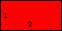
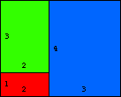
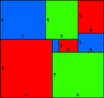
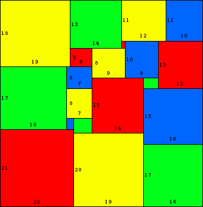

An "almost square" is a rectangle with sides which are consecutive integers. Almost squares 1 × 2, 2 × 3, 3 × 4, . . . n × (n+1) can be tiled inside another almost square when n = 1, 3, 8, and 20, as the pictures below show.
In February of 2013, Giovanni Resta sent me the tiling below, which he says he found in January of 2007. The widths are given, and the + or – sign indicates whether the height is 1 larger or smaller.
In January of 2012, I heard from Daan van den Berg that he and his students Florian
Braam, Mark Moes, and Emiel Suilen, had found a solution for n=34, the only other possible case. They also sent me this link to their paper.

n=1

n=3

n=8

n=20